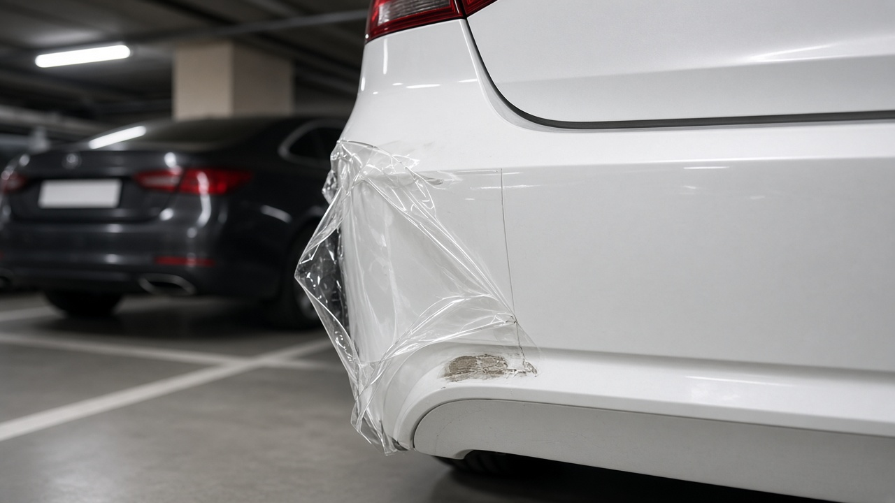
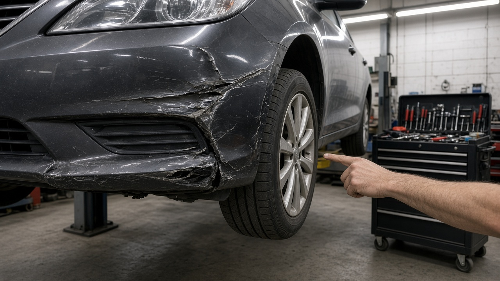
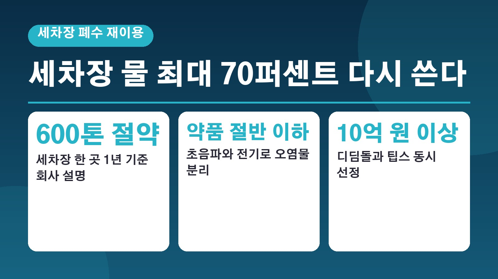
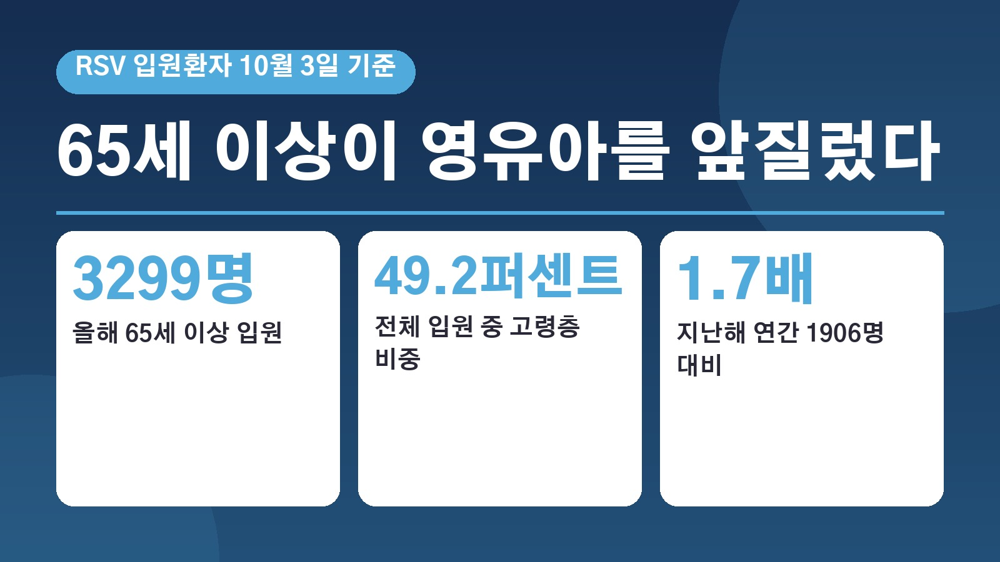
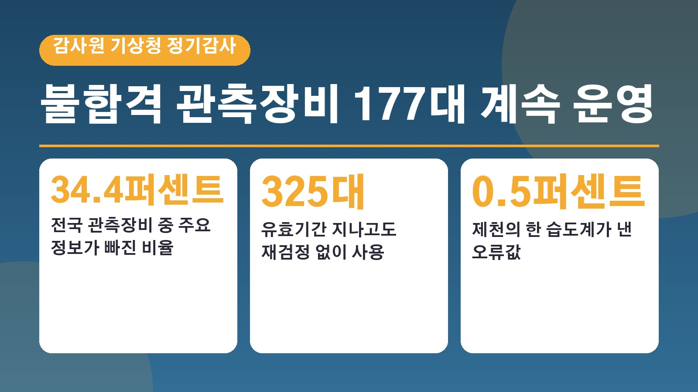
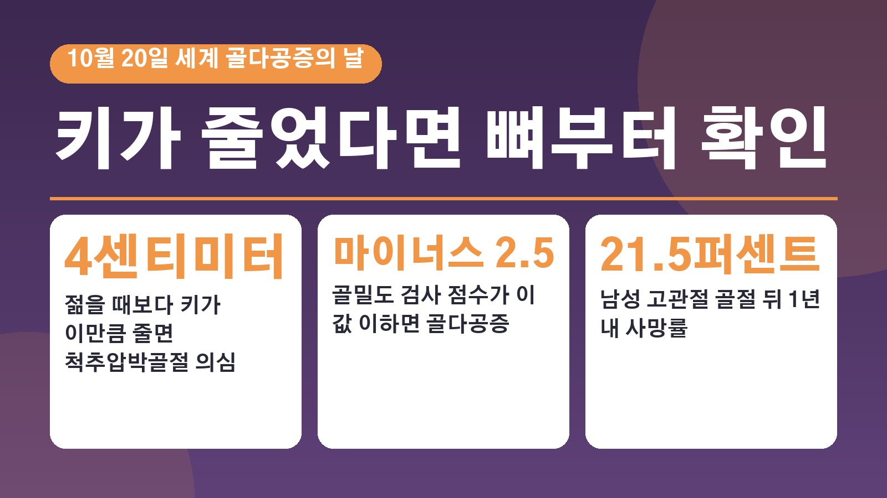
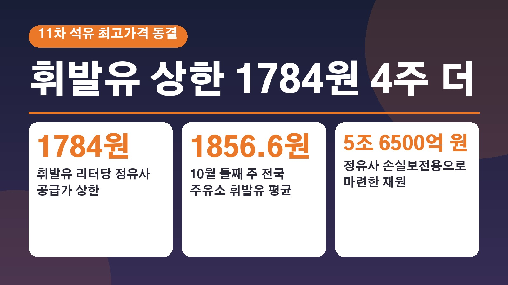

전체 글 75편, 최신 글이 위에 있습니다.
벌써 10월 마지막 날이에요. 회사에서 연말정산 이야기가 나오기 시작하면 올해는 얼마나 돌려받을지, 혹시 토해 내는 건 아닌지 괜히 마음이 쓰이실 거예요. 그런데 내년 1월까지 기다리지 않아도 지금…
깜빡하고 카드값이나 대출 이자를 며칠 늦게 냈다가 바로 갚았는데, 신용점수를 조회해 보니 생각보다 많이 떨어져 있어서 놀라는 분이 많아요. 다 갚았으니 금방 원래대로 돌아오겠지 싶은데 몇 달이 지나…
친구 차를 잠깐 빌려 운전하거나, 내 차가 정비소에 들어가 있는 동안 가족 차를 몰게 되는 일이 생각보다 자주 있어요. 이럴 때 내 자동차보험에 다른 자동차 운전 특약이 있으니 괜찮겠지 하고 안심하…
올해가 두 달 남짓 남았는데 건강검진 안내 문자를 아직 그냥 넘기고 계신 분들 많으실 거예요. 막상 병원에 전화해 보면 12월 예약은 벌써 꽉 찼다는 말을 듣기도 하고요. 그래서 오늘은 올해 국가건…
매매상사에서 중고차를 사고 몇 주 지나지 않아 엔진 쪽에서 기름이 새거나 변속기가 말썽을 부리면 머릿속이 하얘지죠. 계약할 때 받은 성능점검기록부에는 이상 없다고 적혀 있었는데 수리비는 누가 내야 …
차가 갑자기 서 버리면 제일 먼저 떠오르는 게 보험사 긴급출동이죠. 그런데 막상 견인차를 부르고 나서 무료 거리를 넘었다며 추가 요금을 안내받거나, 올해 몇 번 썼는지 몰라서 망설이는 분이 많아요.…
도수치료나 영양주사처럼 비급여 진료를 자주 받다 보면, 다음 해 실손보험료가 얼마나 오를지 걱정되실 거예요. 특히 4세대 실손에 가입하셨다면 2024년 7월 1일 이후 갱신부터 비급여 보험금을 받은…

신차를 뽑고 큰마음 먹고 PPF를 시공했는데, 몇 달 만에 접촉사고가 나면 머릿속이 복잡해지죠. 범퍼 수리는 보험으로 한다 쳐도, 그 위에 붙어 있던 필름 재시공비까지 받을 수 있는지, 필름 회사 …
임신 소식을 듣고 나면 챙길 서류가 한두 가지가 아니죠. 산모수첩, 바우처 신청, 태아보험까지 정신없이 지나가다 보면 자동차보험은 갱신 문자만 보고 그냥 넘기기 쉬워요. 그런데 자동차보험에는 아이가…
교통사고로 사람이 다쳤는데 피해자가 연락을 받지 않거나 합의 금액에서 도저히 접점이 안 보이면 많은 분들이 형사공탁 이야기를 듣게 돼요. 돈을 법원에 맡겨 두면 합의한 것처럼 처리된다고 알고 계신 …

접촉사고가 나서 공업사에 차를 맡기면 가끔 이런 말을 듣게 돼요. 이번에 수리하면서 유리막코팅도 새로 해 드릴게요, 보험으로 처리되니까 따로 돈 안 드셔도 돼요. 사고 때문에 속상한 와중에 공짜로 …
주말에 형이나 동생이 잠깐 차를 빌려 가겠다고 하면 대부분 별생각 없이 키를 건네게 돼요. 그런데 내 자동차보험이 가족한정으로 되어 있다면 이야기가 달라져요. 많은 분들이 형제자매도 당연히 가족이라…
전세 계약을 앞두고 있는데 나이가 만 35세를 넘었다는 이유로 청년 전세보증을 포기했던 분들이 꽤 많았어요. 결혼하고 나서 부부 소득을 합치니 기준을 넘어 버려서 오히려 손해를 본다는 이야기도 자주…
교통사고로 목이나 허리를 삐끗해서 병원에 다니다 보면 언제까지 치료를 받을 수 있는지, 나중에 합의할 때 향후치료비는 얼마나 나오는지가 가장 궁금해지죠. 그런데 올해 9월부터 이 부분의 규칙이 꽤 …
오래 탄 경유차를 이제 정리할까 고민하다가 조기폐차 보조금이 있다는 이야기를 듣고 검색해 보신 분들이 많을 거예요. 그런데 막상 찾아보면 등급이니 차량기준가액이니 1차 2차 보조금이니 말이 많아서,…
새 차를 뽑거나 썬팅을 다시 하려고 매장에 가면 앞유리 몇, 옆유리 몇 하는 숫자부터 고르게 되죠. 그런데 그 숫자가 법에서 말하는 기준과 같은 뜻인지, 단속은 실제로 하는지, 밤에는 얼마나 차이가…
차를 팔고 돈까지 받았는데 한 달 뒤에 자동차세 고지서가 날아오거나, 넘긴 차가 사고를 냈다는 연락을 받으면 정말 당황스럽죠. 중고차는 열쇠를 넘긴 순간 끝나는 게 아니라 명의, 세금, 보험 세 가…
장기렌트로 차를 타다가 이사를 가거나 회사 차가 나오거나, 혹은 생각보다 차를 쓸 일이 줄어서 계약을 중간에 끝내고 싶어지는 때가 있죠. 막상 해지를 알아보면 위약금이 몇백만원이라는 말에 깜짝 놀라…
감기로 동네 의원에 다녀오거나 약국에서 약을 지으면 금액이 작아서 실손보험 청구를 그냥 넘기는 분들이 많아요. 영수증을 챙기고, 세부내역서를 따로 떼고, 사진을 찍어 보험사 앱에 올리는 과정이 번거…
대출 금리를 알아보거나 카드를 새로 만들려다 생각보다 낮은 신용점수를 보고 당황한 적 있으신가요. 연체한 적도 없는데 점수가 왜 이 정도인지, 통신비 납부내역을 내면 정말 오르는지 궁금해하는 분이 …
차를 주말에만 타거나 출퇴근을 대중교통으로 하는 분이라면 자동차보험 마일리지 특약으로 보험료 일부를 돌려받을 수 있어요. 그런데 막상 만기가 되면 사진을 언제 올려야 하는지, 왜 생각보다 환급금이 …
동네 스팀세차 가격 보고 한숨 쉬신 적 있으시죠. 그런데 용인시청 지하주차장에는 어르신들이 직접 차를 닦아 주는 스팀세차장이 있습니다. 이름도 정겨운 에코스팀세차장 효인데요. 이 세차장을 운영하는 …

셀프세차장에서 고압수를 쏘다 보면 바닥으로 쏟아져 내려가는 물이 꽤 아깝게 느껴질 때가 있죠. 세차장은 물을 많이 쓰는 대표적인 곳이라 그 물을 어떻게 처리하고 다시 쓰느냐가 늘 숙제였는데요. 10…
새 차를 뽑고 첫 세차 날은 괜히 설레죠. 흠집이라도 날까 봐 세차장도 고르고 또 고르게 되고요. 그런데 10월 22일 SBS 뉴스헌터스가 다룬 사연은 그 설렘이 첫 자동세차에서 한순간에 무너진 이…
전기차를 세차할 때 보닛 안쪽까지 물을 뿌려도 되는지 한 번쯤 고민해 보셨을 거예요. 엔진이 없으니 괜찮겠지 싶다가도 그 안에 고전압 배선이 지나간다는 생각을 하면 손이 멈추게 되죠. 그런데 10월…
비 오는 날 와이퍼를 아무리 돌려도 앞유리가 뿌옇게 번지면 운전이 꽤 불안하죠. 그래서 세차할 때 유리 세정제로 닦고, 따로 발수코팅제를 올리고, 심하면 유막 제거까지 하게 되는데요. 이 과정이 번…
셀프세차장에 처음 가 보려고 하면 무엇부터 챙겨야 할지 막막하죠. 진열대에 타월과 브러시, 왁스가 잔뜩 있는데 하나하나 사자니 돈이 꽤 들 것 같고요. 재경일보가 10월 17일 셀프세차 입문자를 위…
마음에 들었던 세차장이 있는데 이름도 주소도 기억이 안 날 때가 있죠. 사진첩을 뒤져 간판을 찾고, 다시 지도 앱에 입력하는 수고가 꽤 번거로운데요. AI타임스가 10월 23일 전한 소식에 따르면 …
요즘 세차장에 가면 바닥 배수로와 폐수 처리 설비가 당연하게 갖춰져 있죠. 그런데 불과 40년 전만 해도 세차는 길가에서 아무렇지 않게 이뤄지는 일이었다고 합니다. 대구MBC가 10월 3일 옛 방송…
차 문을 열자마자 퀴퀴한 냄새가 훅 올라오면 일단 방향제부터 찾게 되죠. 그런데 뿌리고 나면 인공 향과 원래 냄새가 섞여서 오히려 더 거북해지는 경험, 한 번쯤 있으실 거예요. 10월 17일 위키트…
자동세차기에 차를 넣을 때 혹시 물이 안으로 새지는 않을까 한 번쯤 걱정해 보셨을 거예요. 그런데 미국에서 실제로 자동세차 직후 차 안 전자장비가 고장 나 7345달러, 우리 돈 약 972만원의 수…
벤츠를 타면서 세차는 늘 다니던 곳에서 하고, 멤버십 앱은 깔아만 두셨던 분들 계시죠. 10월 22일 피앤피뉴스 보도에 따르면 메르세데스 벤츠 서클 멤버십 회원이 소낙스 카케어 매장에서 쓸 수 있는…
출장세차를 부를지 가까운 자동세차장을 찾을지 고민하다가 보험사 앱에 세차 메뉴가 있다는 얘기를 들어 보신 적 있으신가요. 삼성화재의 차량 관리 서비스 카케어가 그런 경우인데요. 10월 21일 아주경…
세차장에서 겉은 반짝반짝하게 닦았는데 문을 열면 퀴퀴한 냄새가 남아 있거나 핸들이 왠지 찜찜하게 느껴질 때가 있죠. 출퇴근은 물론 식사와 휴식, 가족 나들이까지 차 안에서 보내는 시간이 늘면서 실내…
주말에 큰맘 먹고 세차를 끝냈는데 다음 날 보닛이나 지붕에 새똥이 붙어 있으면 정말 속상하시죠. 얼른 없애고 싶은 마음에 휴지로 쓱 문질러 버리기 쉬운데, 이렇게 하면 오히려 흠집이 남을 수 있다고…
주유소에서 기름을 넣고 자동세차기 앞에 줄을 서 있으면 한 번쯤 고민되실 거예요. 날이 덥거나 추우면 에어컨이나 히터를 켜 둔 채 그대로 들어가고 싶어지거든요. 그런데 셀프 자동세차기마다 시동을 꺼…
세차용품이나 광택 컴파운드를 직접 만져 보고 고르고 싶은데 온라인 상세페이지만으로는 감이 안 올 때가 있죠. 세차장을 운영하거나 디테일링에 관심 있는 분이라면 한자리에서 여러 업체를 비교해 볼 기회…
주말마다 세차장에 줄 서는 게 번거로워 방문세차를 알아본 분들 계실 거예요. 그런데 요즘은 따로 세차 앱을 깔지 않아도 우리 아파트 입주민 앱 안에서 바로 세차를 예약할 수 있는 단지가 늘고 있습니…
주유소 옆 무인 자동세차기에 차를 넣을 때마다 내 차 크기나 모양을 제대로 알고 물을 뿌리는 걸까 궁금했던 분들 계실 거예요. 노터치 무인 자동세차 브랜드 워싱데이를 운영하는 세차하는날이 그린에이아…
아파트 주차장에서 출장세차를 맡겨 보신 분이라면 세차가 끝난 뒤 사진 몇 장을 받아 보셨을 거예요. 앞으로는 그 사진이 단순한 작업 인증을 넘어 내 차의 흠집이나 타이어 상태를 알려 주는 자료가 될…

RSV라고 하면 어린 자녀를 둔 집에서나 걱정하는 아기 감기 정도로 기억하시는 분이 많으실 거예요. 그런데 올해 RSV로 입원한 사람을 나이별로 나눠 보니 65세 이상이 영유아보다 많았습니다. 부모…
플레이스테이션5를 쓰면서 게임 하나 받으려면 용량부터 비우고 한참 기다려야 했던 분들 많으시죠. 다른 나라에서는 되는데 한국에서는 안 되던 클라우드 스트리밍이 드디어 들어옵니다. 소니 인터랙티브 엔…
요즘 주변에서 정규직 자리는 잘 안 나오고 계약직이나 시간제 일자리만 보인다는 이야기 많이 들으시죠. 그 느낌이 숫자로 확인됐어요. 국가데이터처가 21일 내놓은 2026년 8월 경제활동인구조사 근로…
마흔을 넘기면서 건강검진 결과표에 전에 없던 수치가 하나둘 보이기 시작하면, 이게 나이 탓인지 폐경이 다가와서인지 궁금해지시죠. 폐경은 몇 년에 걸쳐 천천히 지나가는 일로 알고 계신 분이 많은데, …
전날 밤 미국 반도체주가 반등했다는 소식에 이번엔 좀 오르겠지 하고 계좌를 여셨다가 당황하신 분들 많으셨을 거예요. 20일 코스피는 오히려 3퍼센트 넘게 빠지면서 한때 5500선 아래까지 내려갔습니…
보닛을 열었다가 먼지와 기름때가 잔뜩 앉은 엔진룸을 보고 스팀으로 한 번 싹 쏘고 싶었던 적 있으시죠. 세차장이나 출장세차에서 엔진룸 스팀 청소를 권하는 경우도 있고요. 그런데 10월 16일 더드라…
요즘 부모님이 예전보다 걸음이 느려지셨다거나, 장 보고 오시면 유난히 피곤해하신다는 걸 느끼신 적 있으신가요. 그냥 나이 탓이라고 넘기기 쉬운데, 노인의학에서는 이런 변화를 노쇠의 신호로 보고 일찍…
주말 폭우가 지나고 쾌청한 가을 하늘을 반기신 분들 많으셨을 텐데, 그 날씨가 오래가지 않을 전망이에요. 화요일과 수요일에 걸쳐 가을비가 지나간 뒤 북쪽에서 찬 공기가 내려오면서, 목요일 아침에는 …
전세 만기가 다가오는데 주변에 전세 매물이 잘 보이지 않거나, 집주인에게서 보증금 일부를 월세로 돌리자는 이야기를 들으신 분들 계실 거예요. 그 체감이 숫자로도 확인됐습니다. 올해 1월부터 9월까지…
임신 중에 이유 없이 울적하고 무기력한 날이 이어지면, 이게 그냥 호르몬 탓인지 아니면 아기에게도 영향이 있는 건지 걱정되셨던 분들 계실 거예요. 마침 이 질문에 조금 더 가까이 다가간 연구가 국제…
20일 새벽 일본에서 화성 쪽으로 떠난 탐사선 소식 보셨나요. 화성 탐사라고 하면 보통 붉은 행성 표면을 달리는 로봇을 떠올리는데, 이번에는 화성 곁을 도는 작은 위성에서 모래를 퍼 와서 지구로 가…
자영업을 하시거나 프리랜서로 일하시는 분, 은퇴 뒤 지역가입자로 건강보험료를 내고 계신 분이라면 20일 전해진 건보료 소식에 마음이 쓰이셨을 거예요. 국민건강보험공단이 지역가입자의 보험료도 실제 소…
뉴스에서는 경제가 좋아진다는데 장바구니나 통장 사정은 그대로라 고개를 갸웃하셨던 분들 많으실 거예요. 이번에 정부가 올해 우리 경제 성장률을 3퍼센트대 중반까지 내다봤습니다. 지난 7월 전망보다 꽤…
소방관은 국가공무원이라고 들었는데 왜 도지사가 소방 예산 때문에 골치가 아프다고 했을까, 고개를 갸웃하신 분들 계실 거예요. 최근 경기도 국정감사에서 나온 재정 빨대 발언이 큰 논란이 됐는데, 그 …
회사 메일을 자체 서버로 운영하는 곳이라면 이번 주 들어 웹메일 로그인이 안 된다거나 보낸 메일이 한참 동안 나가지 않는다는 문의를 받으셨을 수도 있어요. 마이크로소프트가 10월 윈도우 서버 보안 …
지난여름 한국은행이 두 달 연속 기준금리를 올린 뒤로, 대출이 있는 분들이라면 이번 달 결정에 눈이 갈 수밖에 없으실 거예요. 오는 22일 목요일 한국은행 금융통화위원회가 기준금리를 결정합니다. 시…

비가 온다더니 맑고, 맑다더니 갑자기 쏟아지는 날이면 예보를 어디까지 믿어야 할지 고민되실 때가 있죠. 그런데 날씨 예보의 출발점인 관측장비 관리에 구멍이 있었다는 감사 결과가 나왔습니다. 감사원이…
요즘 증시가 크게 흔들리면서 삼성전자나 SK하이닉스 레버리지 상품을 들고 계신 분들은 이 상품이 어떻게 이렇게 빨리 나왔는지, 손실 규모는 어디까지인지 궁금하셨을 거예요. 19일 국회 정무위원회의 …

부모님 키가 예전보다 줄어든 것 같거나 등이 조금씩 굽어 보일 때, 그냥 나이 탓이려니 하고 넘기신 적 있으실 거예요. 10월 20일은 세계 골다공증의 날입니다. 이날을 맞아 여러 병원 전문의들이 …
정릉천고가교를 지나 출퇴근하시는 분이라면 이번 소식이 꽤 신경 쓰이셨을 거예요. 하루 10만 대가 넘는 차가 오가는 이 다리에서 다리를 떠받치는 강철 케이블이 지금까지 세 번 끊어졌는데, 그사이 안…
당뇨 진단을 받고 약을 먹어야 할지, 식단부터 바꿔 볼지 고민해 보신 분들이라면 요즘 화제가 된 연구 소식이 눈에 띄셨을 거예요. 식이섬유가 풍부한 식단이 대표적인 당뇨약 메트포르민보다 혈당과 체중…
건강검진 결과지에서 B형간염 항목을 보고도 별 증상이 없으니 그냥 넘기신 분들 적지 않으실 거예요. 그런데 대한간학회가 새로 낸 2026 만성 B형간염 진료지침을 보면, 이 병이 여전히 우리나라 간…

요즘 주유소 가격판을 보면서 최고가격이 정해져 있다는데 왜 가격표 숫자는 더 높을까 궁금하셨던 분들 계실 거예요. 정부가 11차 석유 최고가격을 이번에도 그대로 묶기로 했습니다. 이번 결정으로 무엇…
장기 이식을 기다리는 가족이 있거나 관련 뉴스를 볼 때마다, 기증된 장기를 왜 오래 보관해 둘 수 없을까 궁금하셨던 분들 계실 거예요. 그 질문에 한 걸음 다가간 연구 소식이 나왔습니다. 미국 미네…
혹시 은행에서 개인정보가 유출됐다는 안내 문자를 받으셨거나, 내가 거래하는 은행은 괜찮은지 걱정되셨던 분들 계실 거예요. 지난달 말 시중은행들이 잇따라 해킹을 당한 뒤, 10월 19일 국정감사에 5…
아이 간식으로 산 과자나 바쁜 날 데워 먹는 냉동식품, 컵라면이 어느새 식탁의 단골이 된 분들 많으시죠. 그런데 이런 음식을 많이 먹는 중년의 뇌를 MRI로 들여다본 연구가 나왔어요. 무엇이 확인됐…
일요일 오후에 갑자기 비바람이 거세져서 놀라신 분들 많으셨을 거예요. 여름도 아닌 10월 중순에 서울 일부 지역에는 시간당 50밀리미터 안팎의 비가 쏟아졌고, 도로가 잠기거나 가로수가 쓰러지는 일이…
요즘 주가가 크게 흔들리면서 내 계좌만큼이나 국민연금은 괜찮은지 궁금해하시는 분들이 많더라고요. 마침 국민연금이 큰 지분을 가진 상장사들의 주식 가치가 석 달 반 사이 182조원 넘게 줄었다는 집계…
지난주 주식 계좌를 열어 보고 가슴이 철렁하셨던 분들 많으셨을 거예요. 특히 증권사에서 돈을 빌려 주식을 산 분들이라면 내가 팔지 않은 주식이 강제로 정리되는 반대매매가 걱정되셨을 거예요. 지난 일…
1분이 60초가 아니라 61초였던 날이 있었다는 이야기, 들어 보셨나요. 세계 표준시에 가끔 1초를 끼워 넣던 윤초라는 제도 때문인데요, 이 윤초가 54년 만에 없어지게 됐어요. 우리가 보는 시계도…
마흔 무렵부터 몸이 예전 같지 않다는 말, 주변에서 자주 들으시죠. 그런데 면역세포도 나이가 들면서 천천히 고르게 늙는 게 아니라 특정 시기에 크게 변한다는 연구 결과가 나왔어요. 그 시기가 40세…
가을 낚시철이라 주말마다 방파제나 갯바위로 나가는 분들 많으시죠. 그런데 바닷가에서 일어나는 사고로 숨진 사람이 최근 5년 동안 557명이었고, 그중 열 명에 네 명꼴이 남해안에서 나왔다는 자료가 …
사람 많은 쇼핑몰에서 흉기 난동이 벌어졌다는 소식에 불안하셨던 분들 많으셨을 거예요. 그 뒤로 SNS에는 의자로 몸을 지키는 방법이 빠르게 퍼지고 있습니다. 실제로 도움이 되는 부분과 전문가들이 위…
집값과 전월세 걱정 때문에 정부가 약속한 공급이 정말 이뤄지고 있는지 궁금하신 분들 많으시죠. 마침 정부가 첫 주택공급 정례브리핑을 열고 올해 수도권 착공 실적을 숫자로 공개했어요. 목표 대비 지금…
지난 9일 새벽, 쿠팡이츠로 주문을 받다가 화면이 멈춰 당황하셨던 사장님 많으셨을 거예요. 배달을 기다리다 주문이 취소된 분들도 계셨고요. 그날 보상이 어떻게 정해졌는지, 무엇을 확인하면 되는지 차…